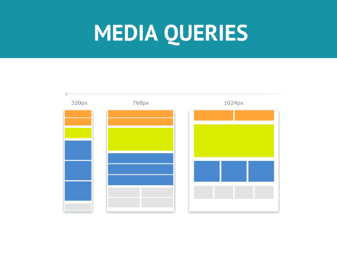

@MEDIAS
IDEAS CLAVE
- PC´s: estilo normal
- Laps y tablets horizontal: @medias screen and (max-width:1024px)
- Tablets verticales y telefonos: @medias screen and (max-width:720px)
- Telefonos en horizontal: @medias screen and (max-width:480px)
Resoluciones:
NOTAS DE LA CLASE
Las media Queries o Consulta de medios, son un modulo de CSS3 que permite adaptarse a la
representacion de todo el contenido de una web hacia otro dispositivo.
Y es un estandar recomendado por la propia W3C y como un principio basico sobre el diseño
web adaptativo.
@MEDIAS
- Con la llegada de CSS2 se introdujó los tipos de medios, que hizo posible la definicion de diferentes reglas de estilos para cada dispositivo.
- Estas pueden ser tanto para computadoras, impresoras, telefonos, televisiones, etc.
- Pero cuando se introdujó CSS3 junto con las medias queries, realizó un cambio importante, ya que ahora en lugar de definir a cada dispositivo, se eligio a analizar la misma capacidad de estas.
Con este uso, las media queries ya son como una tecnica muy popular para tener una hoja de estlo muy personalizada para computadoras de escritio y otros dispositivos.
Tipos de @medias CSS
- All - utilizado para cualquier dispositivo de tipo media
- Print - Utilizado solamente en impresoras
- Screen - Usado normalmente para pantallas de ordenas, tablets, telefonos, etc.
- Speech - Utilizado para lector de pantallas que "lee" la pagina en voz alta.
- Computadora de escritorio: estilo normal
- Laptops y tablet horizontal: @medias screen and (max-width:1024px)
- Tablet vertical y telefonos: @medias screen and (max-width:720px)
- Telefonos en horizontal: @medias screen and (max-width:480px)
